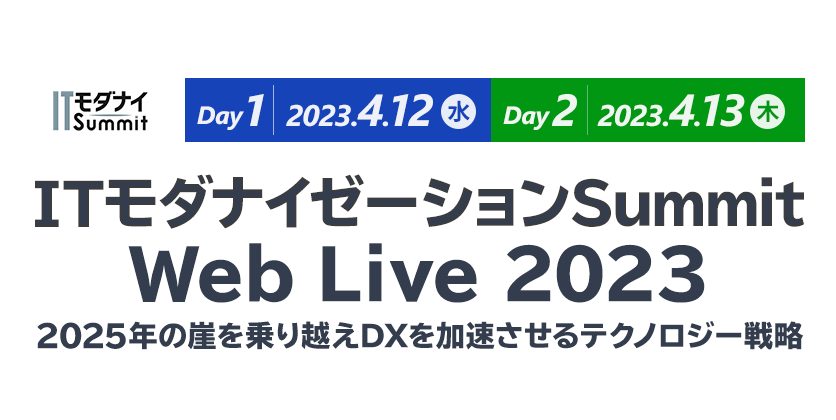

お申し込み受付を
終了しました
メインフレームに代表されるレガシーシステムのモダナイズが最終段階を迎えています。COBOL人材が減少するなか、メインフレームからの撤退が相次ぐなど維持リスクが高まっています。DX（デジタル変革）の推進に向けてアプリを改変しやすくしたり、データを活用しやすくしたりするニーズもモダナイゼーションを後押ししています。
最近は現行アプリをそのままメインフレームからオープンシステムへ移行したり、オープンシステムをクラウドに移行するケースも増えています。肥大化・複雑化し老朽化したシステムをどのように近代化すればよいのか、ITモダナイゼーションの最前線を探るセミナーを実施いたします。
コロナの不安がぬぐえない中より多くのキーマンにご視聴いただくためにWebLiveで配信いたします。事例を織り交ぜながら、ITモダナイゼーションの手法とそれを実現するための製品・技術・サービスを紹介し、システムを近代化させる道しるべを示す場になるでしょう。
両日催事終了後に主催アンケートがございます。
ご回答いただきました方の中から抽選で100名様に
「Amazonギフト券（1,000円分）」をプレゼントさせていただきます。
- ※「Amazonギフト券（1,000円分）」は各日催事終了後の主催アンケートへご回答いただきました方の中から抽選で100名様に、後日ご登録のメールアドレス宛にお送りさせていただきます。
- ※ プレゼントは、お一人様両日合わせて一回とさせていただきます。
- ※ Amazon.co.jpは、本プロモーションのスポンサーではありません。
- ※ Amazon、Amazon.co.jp およびそれらのロゴは、Amazon.com, Inc. またはその関連会社の商標です。
開催概要
- 名称
- ITモダナイゼーションSummit Web Live 2023
- 日程
-
2023
年
4
月
12
日（水）
12：45～17：10 -
2023
年
4
月
13
日（木）
12：45～17：10
- 開催形式
- オンライン（ライブ配信型 Webセミナー）
- 主催
- 日経クロステック
- 協賛
- Boomi Japan、エンタープライズDB、日立製作所、マイクロフォーカス、日本リミニストリート、日本ティーマックスソフト、セールスフォース・ジャパン（MuleSoft）、ソフトロード、ソフトウェア・エー・ジー、東京システムハウス（ABC順）
- 協力団体
-
- COBOLコンソーシアム
- 参加料
- 無料（事前登録制）
- 対象者
- 企業における情報システム部門や経営部門の企画担当者、運用担当者、情報システム子会社、ユーザー企業に常駐しているSIer ほか
お問い合わせ
日経BP読者サービスセンターセミナー係
お問い合わせお申し込み受付を
終了しました